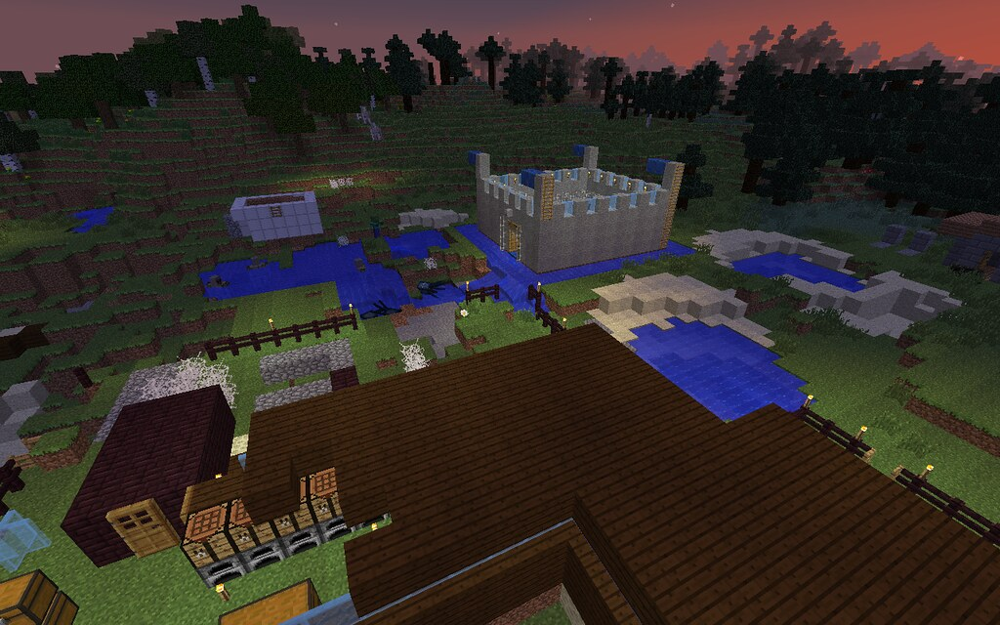
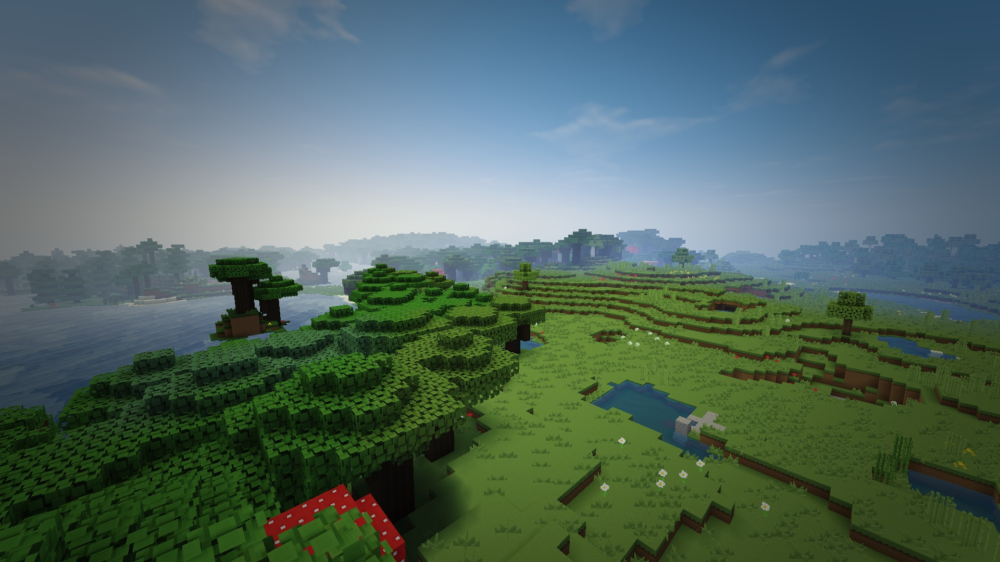
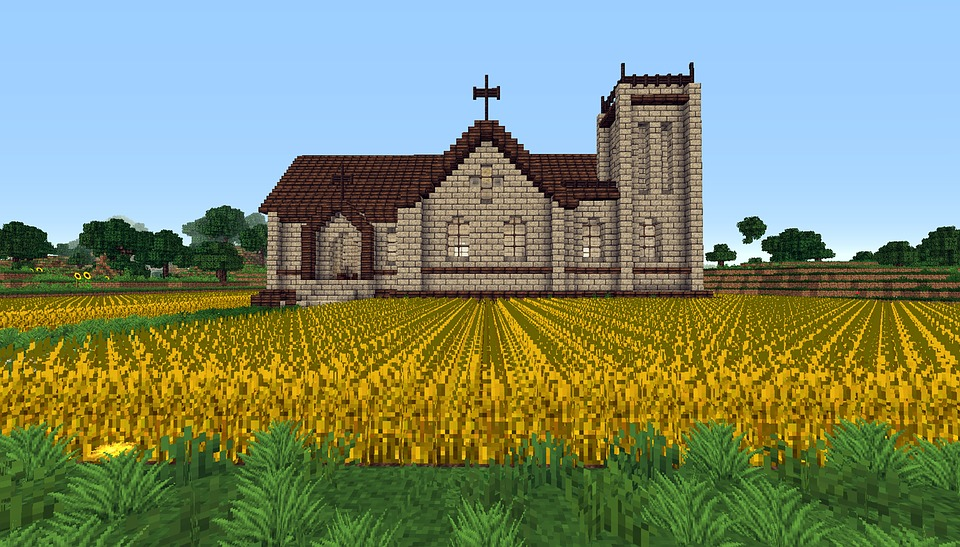

Minecraft
Minecraft wurde vom schwedischen Programmierer Markus Persson erschaffen. Das Spiel wurde von Mojang veröffentlicht und erschien erstmals 2009.
Es war damals jedoch noch in der Entwicklungsphase. Mojang veröffentlichte zusätzliche Versionen für iOS und Android. Der Spieler kann Rohstoffe
abbauen und gegen Monster kämpfen. Das Spielziel ist es den Enderdrachen zu besiegen. In Minecraft gibt es insgesamt 3 Dimensionen. Die Oberwelt
ist die Dimension in der der Spieler startet und auch die meiste Zeit verbringt. Der Nether ist eine Dimension, die nur durch selbstgebaute
Portale erreicht werden kann. Das Ende ist eine Dimension in der man den Enderdrachen besiegen muss. Erreichen kann man diese Dimension nur
durch ein Enderportal welches in einer Festung liegt.


